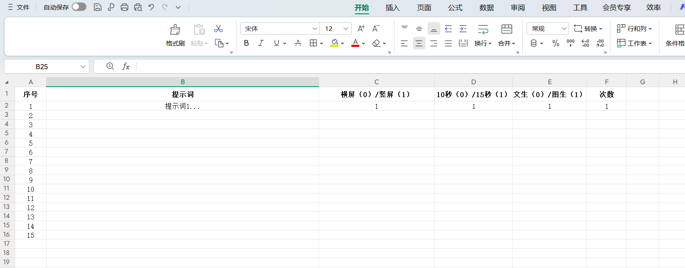

<!DOCTYPE html>
<html lang="zh">
<head>
    <meta charset="UTF-8">
    <meta name="viewport" content="width=device-width, initial-scale=1.0">
    <title>黑鲸千帆SORA2 一键生成系统 | 使用教程</title>
    <style>
        :root { --primary: #7928CA; --accent: #FF0080; --bg: #030303; --blue: #0057ff; }
        body { margin:0; padding:0; font-family: "SF Pro Display", sans-serif; background: var(--bg); color: #fff; line-height: 1.6; }
        #glow-bg { position: fixed; top: 0; left: 0; width: 100%; height: 100%; pointer-events: none; background: radial-gradient(circle at 50% 50%, rgba(121, 40, 202, 0.15) 0%, transparent 70%); z-index: 0; }
        .container { max-width: 1000px; margin: 0 auto; padding: 60px 20px; position: relative; z-index: 1; }
        
        .header { display: flex; justify-content: space-between; align-items: flex-start; margin-bottom: 60px; border-bottom: 1px solid #222; padding-bottom: 30px; }
        .header-left h1 { font-size: 42px; margin: 0; background: linear-gradient(to right, #fff, #888); -webkit-background-clip: text; -webkit-text-fill-color: transparent; }
        .video-link { display: inline-block; margin-top: 15px; color: var(--accent); text-decoration: none; font-weight: 700; font-size: 18px; }
        .video-link:hover { text-decoration: underline; }
        
        .header-right { display: flex; gap: 15px; }
        .dl-btn { padding: 12px 25px; border-radius: 12px; background: #fff; color: #000; text-decoration: none; font-weight: 700; transition: 0.3s; border: none; }
        .dl-btn:hover { background: var(--primary); color: #fff; transform: translateY(-3px); }

        .section { background: rgba(255, 255, 255, 0.03); backdrop-filter: blur(15px); border: 1px solid #222; padding: 40px; border-radius: 32px; margin-bottom: 40px; }
        .section h2 { font-size: 28px; color: var(--primary); margin-top: 0; display: flex; align-items: center; gap: 15px; }
        .section h2::before { content: ""; width: 4px; height: 24px; background: var(--accent); border-radius: 10px; }
        
        .content-box { margin-bottom: 30px; }
        .content-box h3 { color: #eee; font-size: 20px; }
        .content-box p { color: #aaa; }
        .content-box ul { color: #aaa; padding-left: 20px; }
        .content-box li { margin-bottom: 10px; }
        
        .step-img { width: 100%; border-radius: 20px; border: 1px solid #333; margin: 20px 0; box-shadow: 0 20px 40px rgba(0,0,0,0.5); }
        
        .warning-box { background: linear-gradient(135deg, rgba(255, 0, 128, 0.1), rgba(121, 40, 202, 0.1)); border: 1px solid var(--accent); padding: 30px; border-radius: 20px; color: #fff; }
        .warning-box strong { color: var(--accent); font-size: 20px; display: block; margin-bottom: 10px; }
        
        .back-nav { text-align: center; margin-top: 60px; }
        .back-nav a { color: #666; text-decoration: none; transition: 0.3s; }
        .back-nav a:hover { color: #fff; }
    </style>
</head>
<body>
    <div id="glow-bg"></div>
    <div class="container">
        <div class="header">
            <div class="header-left">
                <h1>黑鲸千帆SORA2 一键生成系统</h1>
                <a href="http://xhslink.com/o/1FfOk9IGULR" class="video-link">▶ 查看视频演示</a>
            </div>
            <div class="header-right">
                <a href="https://pan.baidu.com/s/1UM7lA0swqmIbWr2wyBH0dQ?pwd=hjqf" class="dl-btn">高级版下载</a>
                <a href="https://pan.baidu.com/s/1UM7lA0swqmIbWr2wyBH0dQ?pwd=hjqf" class="dl-btn">旗舰版下载</a>
            </div>
        </div>

        <div class="section">
            <h2>1. 环境准备</h2>
            <div class="content-box">
                <ul>
                    <li><strong>安装位置：</strong>建议将软件放在非系统盘根目录下，如 D:lackwhale</li>
                    <li><strong>网络要求：</strong>无需设置代理，国内网络即可</li>
                    <li><strong>下载节点选择：</strong>（仅）旗舰版支持下载网络检测和手动切换。建议按本地宽带网络选择，香港节点可能较快但不稳定，建议作为备选</li>
                </ul>
                
            </div>
        </div>

        <div class="section">
            <h2>2. 任务提交方式</h2>
            <p>系统支持挂载目录和手动批量提交，支持多批次并行管理。</p>
            
            <div class="content-box">
                <h3>挂载目录提交</h3>
                <ul>
                    <li>自动检测提供的目录（根目录或子目录）下存有生成模板的子目录并读取模板中的所有生成任务</li>
                    <li>可以一次提交单个/多个批次生成任务</li>
                    <li>生成模板中存在图生任务的需在对应文件夹中存放图像（自定义文件名）</li>
                </ul>
                
            </div>

            <div class="content-box">
                <h3>提交模板说明</h3>
                <ul>
                    <li><strong>高级版：</strong>支持横竖屏/10s-15s/图生-文生设置</li>
                    <li><strong>旗舰版：</strong>默认为竖屏/15s，仅支持图生/文生设置</li>
                </ul>
                
            </div>

            <div class="content-box">
                <h3>手动提交</h3>
                <ul>
                    <li>支持手动批量输入提示词，图生视频需手动指定对应图片路径</li>
                    <li>可提交多批次任务加入任务列表排队执行</li>
                    <li>模式设置栏未按0-1设置，或者图生模式但文件夹中无图片均会弹窗报错</li>
                </ul>
                
            </div>

            <div class="warning-box">
                <strong>⚠️ 重要提示：</strong>
                <p>每次提交点击确定后将直接开始生成，已提交任务无法取消！仅提交失败（不计数）或者制作失败（返还计数）不计入额度。任务完结后将自动归档至对应子文件夹并按提示词顺序命名。</p>
            </div>
        </div>

        <div class="section">
            <h2>3. 报错处理/特殊情况处理</h2>
            <div class="content-box">
                <ul>
                    <li><strong>失败判定：</strong>即使生成至 99% 的任务也有可能失败，请确定任务确定制作失败后再关闭面板，否则已计数额度不会返还。</li>
                    <li><strong>制作失败归因：</strong>除接口错误外，禁止上传包含真人(人脸、身体部位)版权侵权或其他违规内容的图片及违反 Sora 规则的提示词。</li>
                    <li><strong>下载延迟：</strong>由于服务器抖动，可能造成部分任务下载缓慢，请耐心等待，系统会自动重试。</li>
                </ul>
            </div>
        </div>

        <div class="back-nav">
            <a href="index.html">← 返回生成工具首页</a>
        </div>
    </div>
</body>
</html>